Synopsis
Efter att ha kommit till Sverige som flykting från Syrien, och så småningom fått hit sin fru och sina barn, dras regissören Ayman Hassdo in i en infekterad vårdnadstvist där ingenting är som det ser ut.
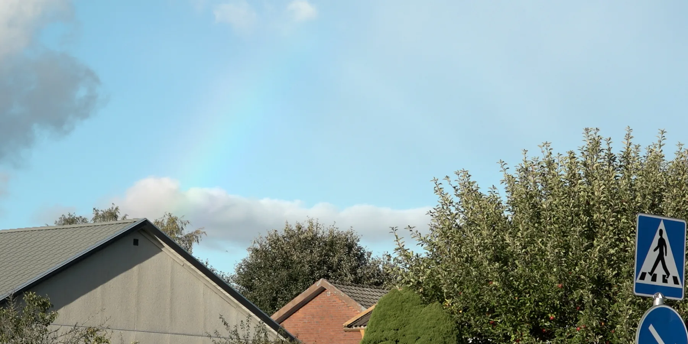
Status och produktion
Större delen av filmen är inspelad och en råklippning finns. Arbetet fortsätter med kompletterande inspelning och slutklippning.
Vi söker finansiering för att färdigställa filmen och en producent som vill ansluta till teamet. Parallellt sätter vi samman gruppen som ska göra efterarbetet.
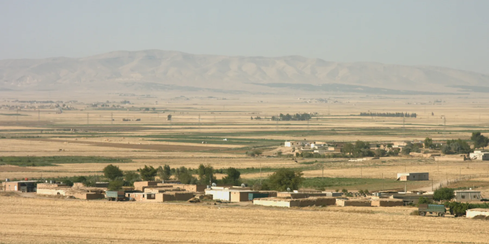
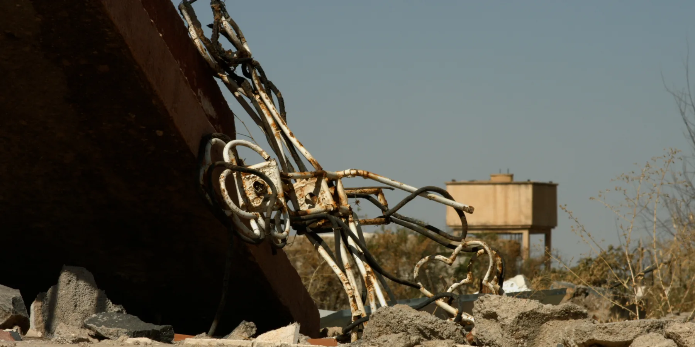
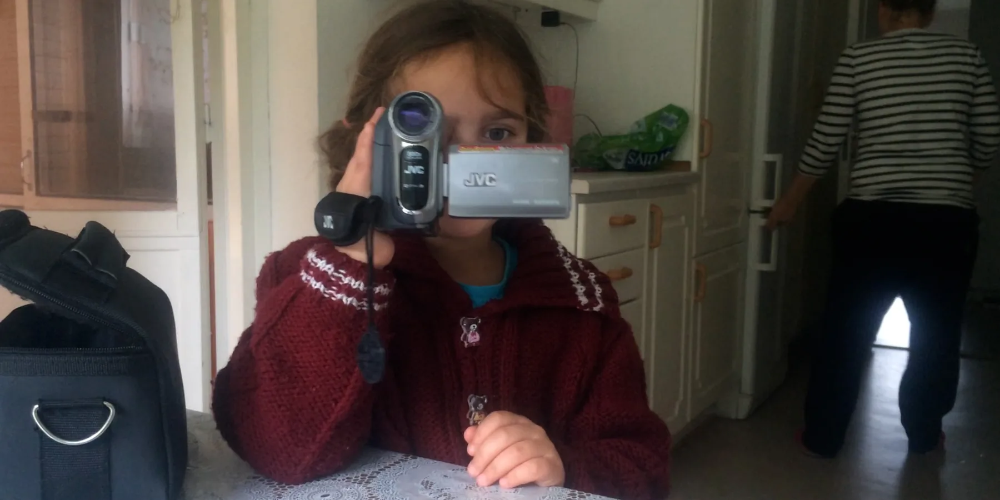
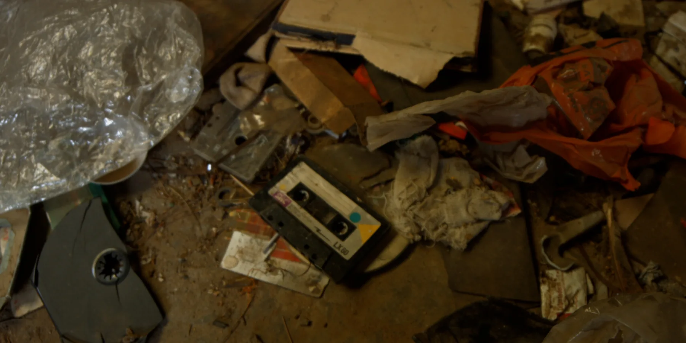
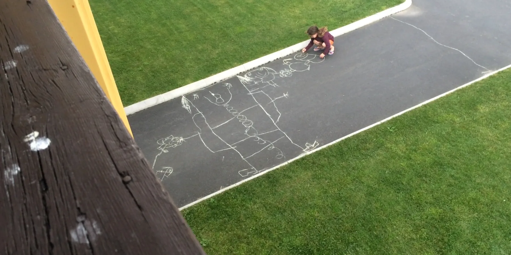
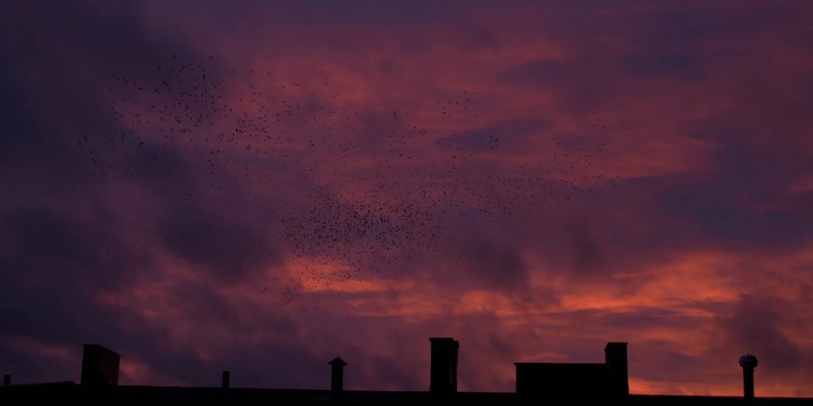
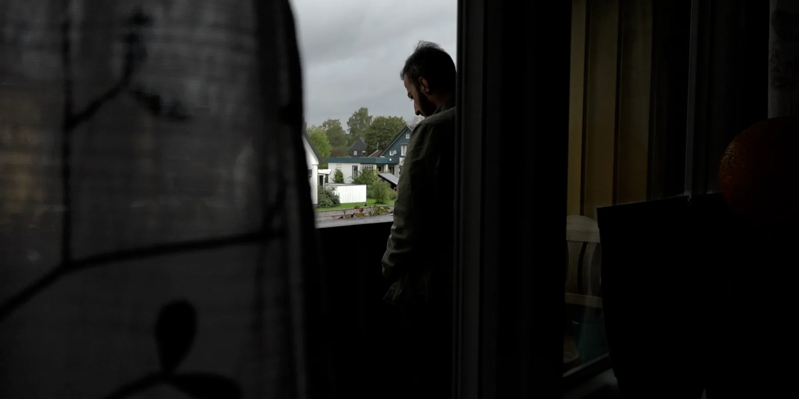
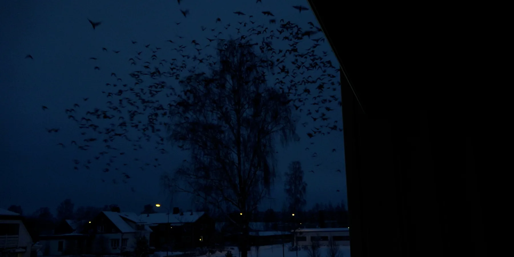
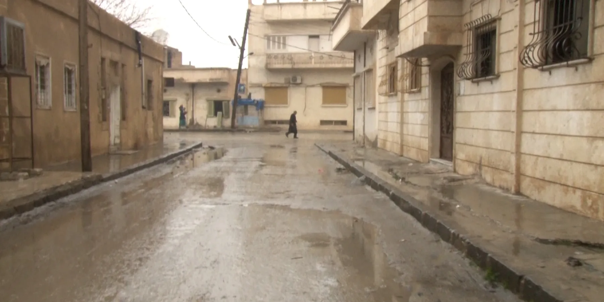
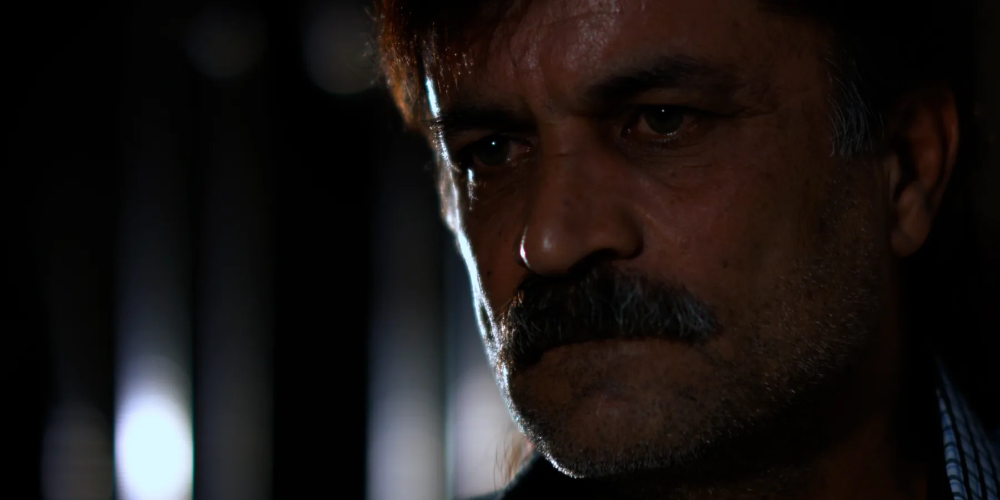
Medverkande
Regi och produktion
Ayman Hassdo
Producent
Mia Engberg
Foto i Syrien
Bashar Aldolli
Kamera i Syrien
Cemil Murad, Mohammad Ali Mulla
Kamera
Joel Arvidsson
Research och kamera i Sverige
Annika Fredriksson
Kamera i Sverige
Ayman Hassdo
Konsult
Axel Danielson
Konsult och dramaturg
Cecilia Torquato de Oliveira
Mentor
Kalle Boman
Ljuddesign
Fredrik Dalenfjäll
Musik
Yojuliet
Produktionskoordinator
Annika Elliot
Research i syrisk folkmusik
Rober Yazbeck
Samproduktion
Story AB
Med stöd av
- Film i Region Jönköping
- Gaze ”Talent to Watch”
- Längmanska kulturfonden
Skriv till Ayman
Frågor om filmen, visningar eller samarbete.